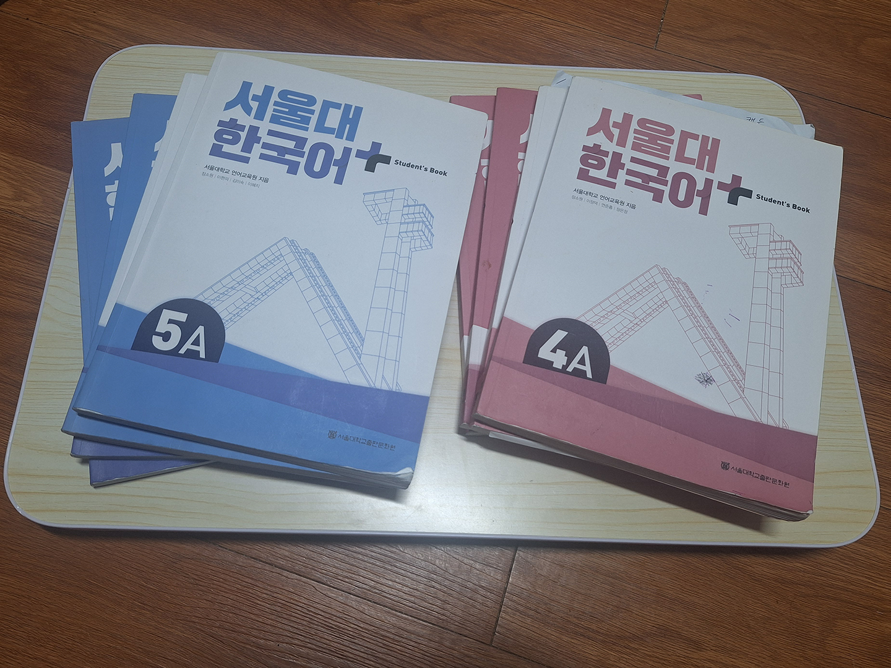
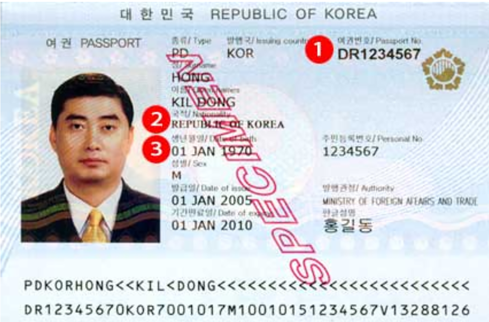

How to Go to University in Korea
I recently received my visa, so that I can go back to Korea for my Master’s program. And it made me think about when I first received my visa to go to Korea, nearly 9 years ago.
In those 9 years, Korea has grown in popularity significantly and there are more and more people who are interested in coming to Korea. Some may even be considering where to go to university in Korea. As someone who attended university for the full 4 years in Korea, I thought I could shed light on what the process of getting into university is like and how it is to attend a Korean university.
The Two Paths
The SKY universities (Seoul National University, Korea University, Yonsei University) logos taken from their official websites.
The first thing I think you need to consider when thinking about attending university in Korea is how you want to do it. I believe there are two main ways to do it. The first is exactly what you’d expect. Just apply to the university online!
On the other hand, the method I would recommend is actually a little bit different and gives you some adjustment to Korea as well as some outs in case it doesn’t work out. This method is to first go to a Korean Language School and then apply to university at a later time. I would actually highly recommend this method to anyone thinking of coming to Korea, ESPECIALLY if you have not been to Korea before.
The Language School Path
The Level 4 and Level 5 sets of books from the Seoul National University Language School
Going to Korean Language School is actually quite simple. You can just apply to any one you find. There are language schools associated with many of the universities here.
Some of the more popular ones include Seoul National University, Korea University, Yonsei University, Ewha University, and Sogang University. All of these have their various pros and cons, but that would probably require its own article.
It is important to note however, that while these language schools are associated with the university, they DO NOT guarantee you admission into the university later. They are associated and work together, but they are somewhat separate entities.
One of the biggest reasons I recommend this method is that it allows you to experience Korea and see if you like it first, before committing to 4 years of a degree program. Sort of a trial period, per se.
The Korean language schools are each broken up into 6 levels, with each level taking approximately 3 months. So it will take you approximately 1 ½ years to progress through the whole program. This gives you many opportunities to reassess and choose somewhere else in case Korea isn’t the right place for you.
You don’t need to do all 6 levels, though that can of course be helpful or fun. I recommend doing at least 3 or 4 levels. This will provide you with a nice Korean base, which I think is critical for the second biggest reason I recommend this path: succeeding in Korean university.
Going to a language school before entering university makes your life significantly easier once you actually do get into university. You can make friends easier, find useful information easier, parse various documents and announcements, and figure out admin-related tasks on your own without needing to bring a friend everywhere to translate for you.
This is honestly especially helpful when navigating documents and paperwork that the school or government gives you. Even when they claim to have English documents or websites, you will oftentimes find the dodgiest English ever or a translation that hasn’t been fixed since the time when they ran it through Google Translate 15 years ago. You will start wondering if you actually know English.
It’s at the point where, despite my Korean not being perfect, I just default to using the Korean versions of sites, because I EXPECT the English one to be a confusing mess. This can be twofold, because sometimes the English version of the site doesn’t even have all the same information or features as the Korean one, which is especially annoying because that information is sometimes useful or needed.
Another reason knowing some Korean can be helpful is for classes. You can talk to your colleagues and classmates. This usually puts them much more at ease and open to talking and working together.
The second part of this is kind of sad and a point of criticism I have, but it’s a lot of Korean universities’ dirty secret. Sometimes, even when the lecture is advertised as being in English, you will show up and the professor says they are just going to do the lecture in Korean anyway.
This feels really messed up and almost like fraud, but it feels like there is not much you can do about it. The professors will usually still have materials in English at least and let you use English, but it means the lecture will be useless to you if you don’t know any Korean.
Make no mistake. This isn’t about refusing to integrate with another culture and learn their language. I am perfectly fine and actually excited about that prospect. But if you are going to advertise something as being in English, at least don’t lie to me about it and just use Korean anyway.
The bright side to this is that this has gotten a lot better in the past few years as Korea has grown and become more globalized.
Applying to Your Univeristy

You may have to submit your official documents in person at an administration building such as this
Ok, so you’ve made the decision to go to university, either immediately or after going to language school? I personally think you should do a lot of research into the type of university you want, the major you want to apply to, and the location.
Every university has their pros and cons, and I’m a big believer in not choosing a university just because of its ranking. Those rankings are so ambiguous and misleading, anyway.
I won’t deny that it is a factor though, when thinking about your future. I just hope you won’t solely choose your university based on that.
The application process is pretty standard, just like around the world, but you may need to prepare some extra documents you wouldn’t have otherwise, so be prepared ahead of time. For example, you will often need to apostille some documents, such as your high school diploma. This varies by university, but it is something you need to be aware of and possibly prepare for earlier than you might have otherwise.
I think another factor to consider is when you will enter university. You can enter in the Spring or the Fall. Similar to the rest of the world. The reason I mention this, though, is because if you are from the US or another country where the start of the school year is usually in the Fall, it can be helpful to know that Korean schools start in the Spring.
There is nothing wrong with starting in the Fall, but your fellow Freshman class will be smaller and it can also feel kind of nice to start at the same time as most of your other fellow students in the Spring. Your schedule and events will line up more, such as classes or graduation.
Spring applications usually occur around mid to late August, while Fall applications usually occur around late February or early March. These times aren’t the same for every university, so be sure to check ahead of time and be extra sure to have all your documents prepared early. You don’t want your great opportunity to be spoiled by deadlines!
I would also like to give a warning ahead of time to remember that the deadlines are listed in local Korean time, so I would recommend you to get your documents in a few days early. Depending on your time zone, the deadline can be a day before you think. This can be especially annoying for deadlines that are only open for short amounts of time.
After Acceptance
Example of what an acceptance letter into a Korean Uni might look like
So you made the jump and applied to a university and you were accepted? Congratulations! This is an exciting time and opportunity. I hope you will enjoy it as much as I have.
Your next steps are largely administrative…getting documents, waiting, signing documents, waiting, apostilling documents, waiting, and submitting documents. Make sure you have your documents in order!
I’m not going to list what you need here, because it’s highly dependent on what country you are from, so it varies slightly. For example, I remember my Chinese friends from language school having to prepare extra documents related to health that I didn’t have to.
Be sure to check your school’s information and website. I would also check your local Korean embassy’s website to see what documents are needed. Sometimes, it differs for some reason, and I’m not sure which is right.
Dealing with Korean immigration is an absolute mess with conflicting information everywhere. (That deserves an article of its own…) It’s better to send more documents than needed in my opinion, so I would include any document your school says you need and any document the embassy says you need.
First Steps in Korean Uni Life
Example RC card taken from the immigration website(Not a real person)
You got accepted into a university, successfully got your visa, and have arrived in Korea? What an exciting and heart-fluttering time! Now, it’s back to document time! Sorry…it’s endless.
These are the 3 MAIN critical things that you will need to comfortably live in Korea:
- Your Residence card (RC) (formerly known as ARC (Alien Registration Card), though this name is still widely in use)
- Your Korean Phone Number
- Your Korean Bank Account
The most critical and mandatory of these is your Residence Card. This is required if you are going to be in Korea longer than 90 days. And you must apply within 90 days of arriving in Korea.
I recommend doing this as soon as possible, because you are going to NEED this for everything, including the other 2 items I mentioned above. This is your lifeline in Korea. It can be such a hassle to do anything, while you are still waiting to get it.
To get it, you must make an appointment at the immigration office via hikorea.go.kr. (If you are having trouble making an appointment, try using a different browser, such as Edge. Korean web design is still very poor and certain browsers are less supported here.)
It is important to note that there are no walk-ins. They will not let you do anything if you show up without an appointment.
When making an appointment, make sure you choose the proper office, based on where you live, NOT where your university is located. This is important to note, because you will often be told the wrong thing, even by your own university! My university still falsely tells its students that they MUST go to the office in Jong-ro, which is incorrect if you don’t live near the university.
For example, there are 3 different offices in Seoul, depending on which neighborhood you live in.
Now, here is my big tip for getting this process done fast.
Your university will usually send you a message just before the semester starts or even after you arrive in Korea, telling you to make an appointment at the immigration office. But the appointments fill up fast and are usually fully booked over a month in advance. Sometimes even 2 months!
Waiting this long can be highly annoying, and you will face roadblocks in signing up for things or filling out documents. But you can actually do this before you even arrive in Korea! You can use your passport or visa documents to make an appointment before that.
I did this for my most recent return to Korea and my appointment is only a week and a half after I arrive back in the country. You can save yourself a lot of hassle and frustration the quicker you get your card in hand.
Next up, your Korean phone number! To get a Korean phone number, you will need your RC card. Your ID on your RC card and phone number are heavily linked and used everywhere, for various verifications and signups.
Not having a Korean phone number will limit the things you are able to do, including signing up for certain apps, such as taxi apps or banking apps (absolute musts in Korea). It is worth noting that you can still technically get a prepaid Korean phone number without your RC card, but this usually can’t be used for signups or ID related matters.
While not really the focus of the article, I will give a slight tutorial on how to get through the sign-up process on various websites. For us foreigners with non-Korean names, it can be incredibly frustrating to sign up for things, even when we have our RC card.
This is because every company seemingly processes foreign names differently. You would think it’s simple. It’s your own name!
But different companies do it differently. When inputting your name, you may need to try various combinations. Some companies expect foreigners to put their last names last, while others will treat you like a Korean and put your last name first.
What can get really confusing however is capitalization. Many companies will use ALL CAPS for names, since Korean doesn’t have any capitalization. Some companies will only capitalize the first letter of each name. You will likely have to try multiple combinations on different websites.
Another confusing aspect is if you have a middle name or multiple names. Some will omit the extra names and some will use them.
And then it gets extra tricky for those of you with longer names. Korean names aren’t usually very long, so many programs often have a character limit. If your name is longer than the limit, you will be soft locked out of filling stuff out. I really feel sorry for you guys, because there is no fix for this sometimes and you will often have to spend time talking to support and waiting for a solution.
To give a few examples, I think the most common ways you will have to input your name are: LAST FIRST MIDDLE (most common), Last First Middle, or FIRST MIDDLE LAST. You may need to try some other combinations, such as removing your middle name, but these 3 examples should get you through probably 95% of situations.
To sign up, the two main carriers in Korea are KT and SKT. You can just walk into any store! They are everywhere. There are a couple of smaller carriers too, but these ones are the simplest and offer the most benefits. You can do more research into either one or any other carrier, but you really can’t go wrong with any carrier here. Korean speeds are absolutely blazing fast!
The final thing you will need is your bank account. There isn’t much to say here that hasn’t already been said for other items. At some banks, you are able to sign up without an RC card, but your account will have limited functions. So, you will need your RC card.
Most universities have a bank that is heavily affiliated with them, so I would recommend just signing up with them. That way you can get help from your school or friends. You can also guarantee that a branch will be located nearby. But you are absolutely free to search each bank and choose which one works best for you.
Having a Korean bank account is very important for life here. While you will be able to use your foreign card almost anywhere here, some things require a bank account, such as online functions or apps. This includes paying your rent, sending larger sums of money like tuition, buying tickets to events, or doing quick transfers to friends or restaurants.
It’s so simple here to send money to each other, so it can be especially comfortable to have a Korean bank account. Such as when you have to pay friends back immediately. This way you don’t have to carry cash everywhere with you. Your Korean friends will likely have almost 0 cash on them, so it can be awkward for you to do things if you are the only one carrying cash around.
Conclusion
That’s all I have for you! I hope this information was enlightening for you on how to go to and survive in a Korean university. While there might be some other important things or must-dos for university, these should be the most basic and important ones that will help you figure out anything else you may come across.
I hope this helps you decide whether to go to a Korean university and how to hit the ground running if you do come here. It can be such a rewarding experience and I can’t recommend it enough. Good luck!